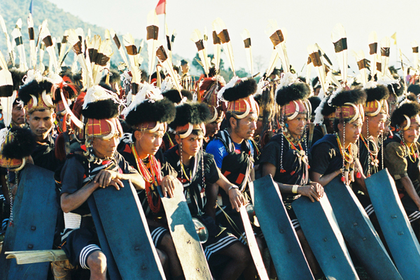
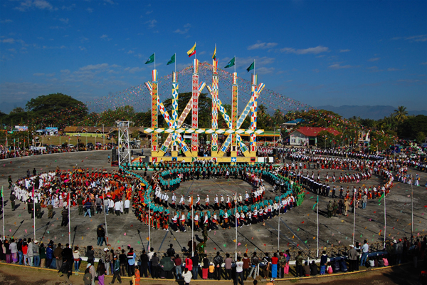
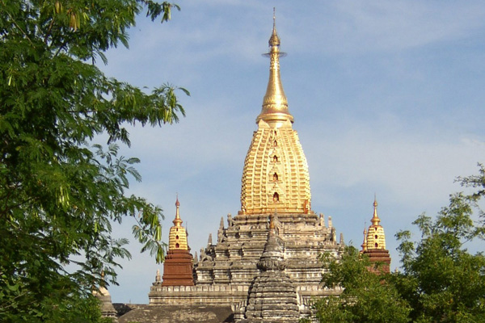
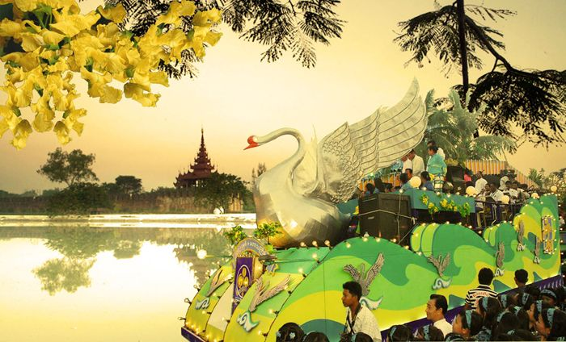
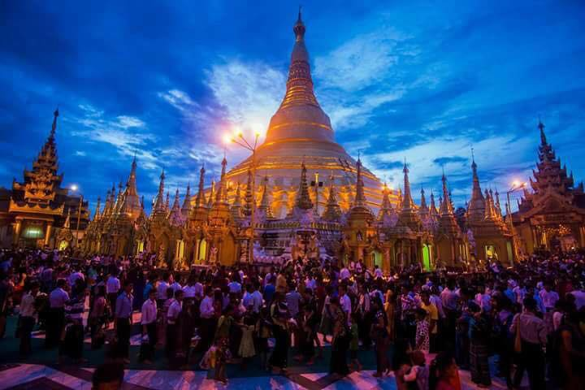
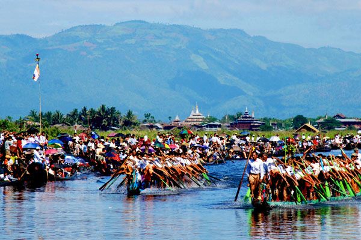
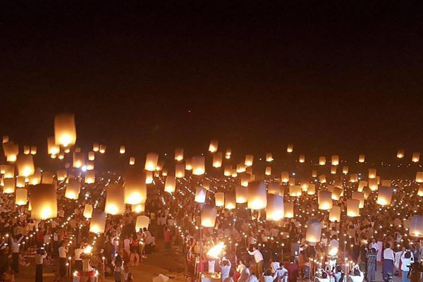
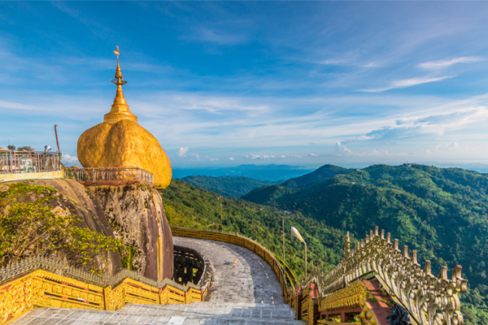

Narga New Year (January)
This festival is held between January 14 to 16, the festival venue rotates from one Naga town to the other (Leshi, Lahe and Nanyun, Sagaing Region). More than 49 different clans dressed in their distinctive traditional clothes gather to welcome the New Year. The locals exchange kind wishes with families and friends, sing and dance to folk songs for two days.

Kachin Manaw Festival(January)
The festival is held at Myintkyina, the capital of Kachin State. In this festival, the Kachins perform the Manaw dance – a dance that was part of the Nat (spirit worship) many years ago.The people dance around the Manaw poles in colourful traditional dresses to celebrate the New Year. Tourists are usually invited to join the locals in enjoying the joyous dance of the festival.

Anada Pagoda Festival(January)
This festival celebrates the great Ananda Pagoda and the tradition that have been practised since the beginning of Bagan period.Besides being a religious festival, this celebration also serves as a social gathering that reunites old friends and distant relatives as they meet to attend the festival together.

Water Festival (April)
Myanmar people celebrate the fa mous waterfestival called “Thingyan”. One cannot avoid of getting very wet because everyone throws water at everybody. People drive through the city in open cars and there are stages along the street where people throw water. During this time, everything is closed: restaurants, shops, markets, Museum, etc.
Bodhi Tree Water Festival(May)
During the summer month of May, pilgrims gather at pagodas and temples throughout the country to water the sacred Bodhi Trees. It is said that Lord Buddha gained enlightenment when he was resting under a Bodhi tree.During the festival, monks and devotees water the roots of these living holy relics as part of a merit-making ritual.

Waso Fullmoon Festival(July)
The festival is celebrated to honour the three turning points of Siddhartha Gautama’s life to become Lord Budha.During the festival, Buddhist followers donate robes and other items to the monks in the monasteries as a part of the merit-making ritual. Monks and nuns spend the entire rainy season meditating and teaching sermons.

Phaung Daw Oo Pagoda Festival(September & October)
People gather at Inle Lake in September to celebrate this festival. This is considered the largest Buddhist celebration in the Inle Lake, Shan.The images are covered with so many layers of gold leaf that the actual features could no longer be recognised.There are rituals involving attendees dancing and singing. Tourists also get to enjoy the unique one-legged boat race that could only be seen in Myanmar.

Shwe Kyin Light Festival(October)
Held at Shwe Kyi Creek in Bago every October, this festival is divided into two sessions. Locals first begin the morning of the festival by participating in boat races. Teams of men and women compete in this race together. After the race, floating shows are performed on boats along the creek featuring villagers who dance and sing to traditional music. At night, thousands of attendees get together and release lit paper lanterns onto the river.
Hot Air Balloon Festival(November)
Taunggyi Hot air balloons festival will be held on November and can watch the various competitions of hot- air balloons. At day-time, see the competitions of decorated hot-air balloons in different shapes and forms of animals such a s elephants, horse, cattle, pig mythical Hintha bird and hen etc. Also see the fireworks and firecrackers of hot air-balloon at night time.
